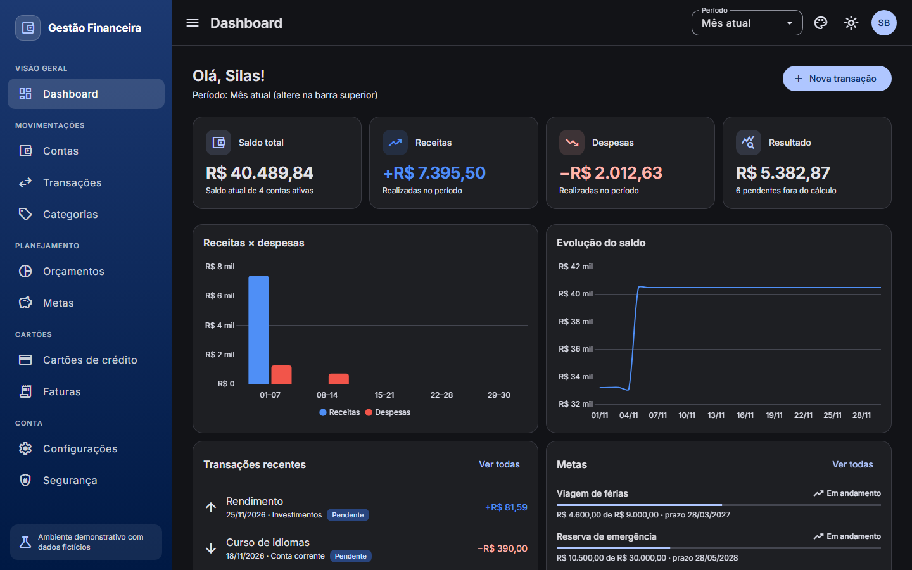
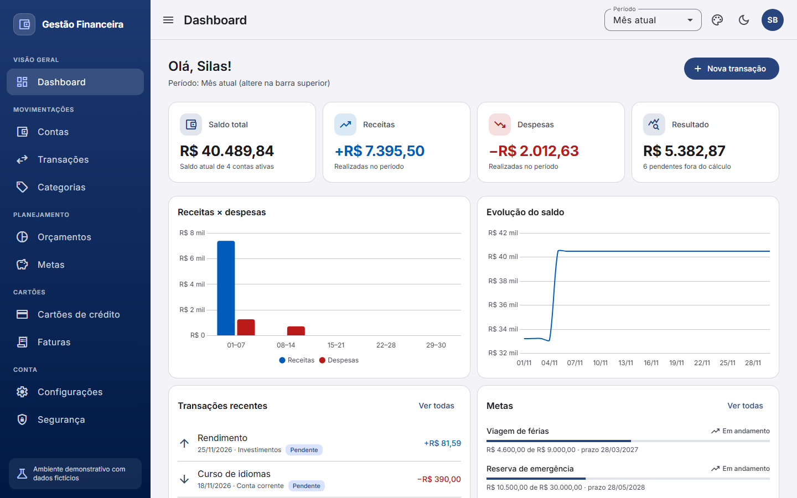
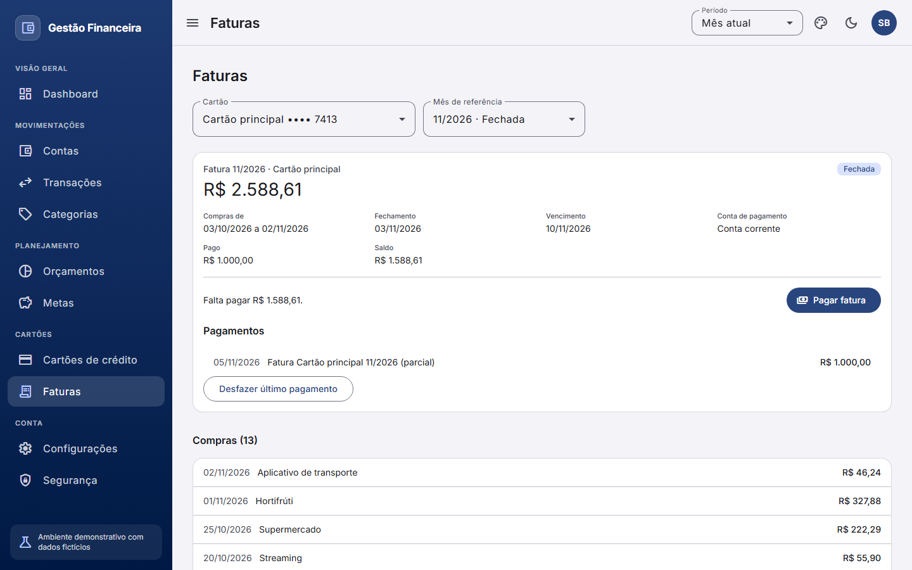
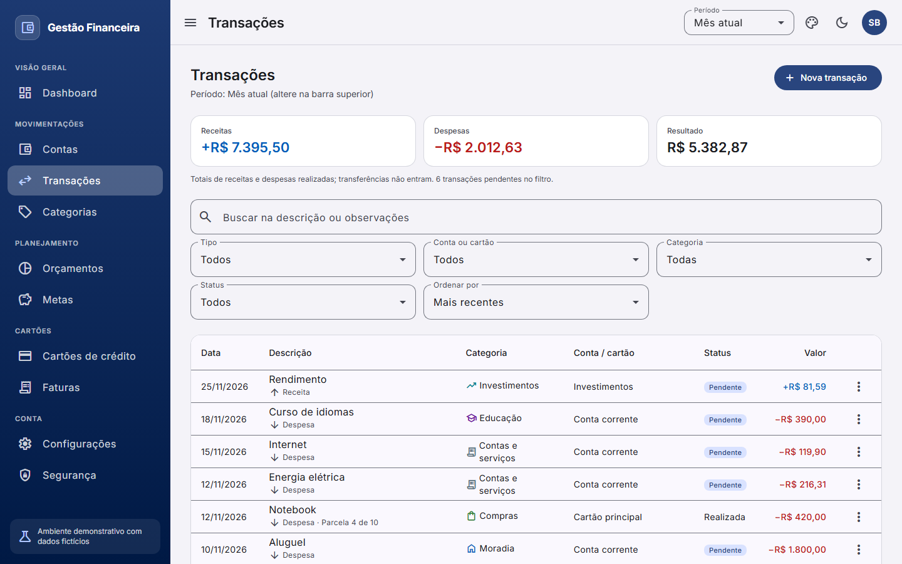
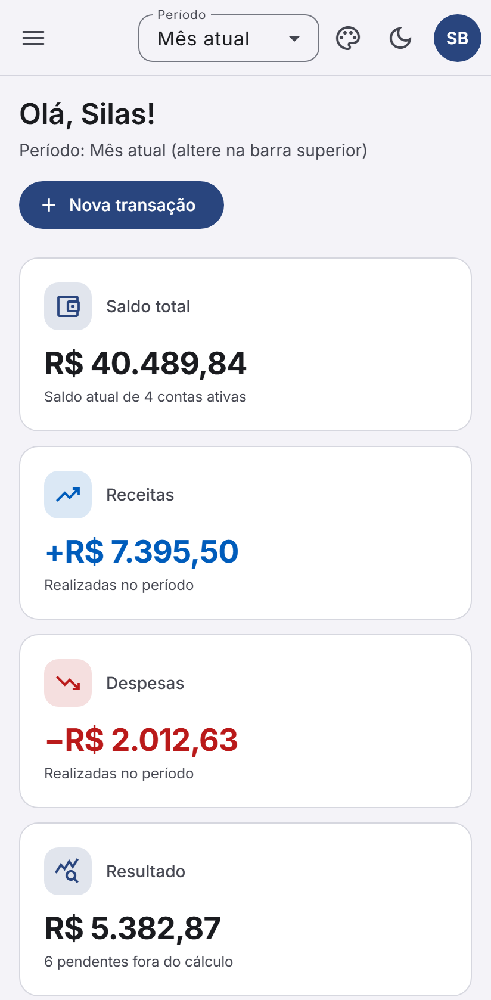

Full-stack · Front + API
Gestão Financeira
App de finanças pessoais feito de ponta a ponta: front em Angular 22 e API própria em Node, com Fastify e PostgreSQL. Contas, transações, cartões com fatura, orçamentos, metas e dashboard. O interessante são as regras difíceis e o que costuma ficar de fora de projeto de portfólio.
A demo tem uma conta de demonstração na tela de login. A API roda no plano gratuito do Render e pode levar até um minuto para acordar.


Faturas calculadas, não gravadas
O saldo de uma fatura passa para a seguinte, com pagamento parcial e travas em cadeia: uma compra antiga não muda fatura já paga. Compras parceladas com antecipação e cancelamento, e estornos.
Concorrência e idempotência
ETag e If-Match recusam edições sobre dados desatualizados (412).
Idempotency-Key e trava de linha impedem pagamento em dobro.
Segurança de verdade
Sessão em cookie __Host- com Argon2id, revogação imediata, verificação de origem, rate limit,
CSP aplicada em produção e teste de isolamento que chama toda rota com o id de outro usuário.
Observabilidade
Cada requisição leva um X-Request-Id. A falha mostra um código na tela, que leva à linha do log
na API; erros do navegador também são relatados à API.
- Testes da API
- 1.037, contra Postgres real
- Cobertura da API
- 97% das linhas
- Testes do front
- 600 unitários e 57 E2E
- Acessibilidade
- axe nos temas claro e escuro
- Decisões
- 16 ADRs nos dois repositórios
- Entrega
- 18 etapas, PRs com CI obrigatório


